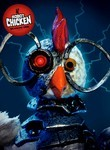
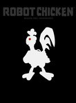
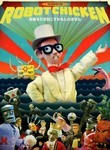
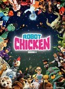

Robot Chicken
Stephen Klancher
...has seen 27
...has seen 0.5 hours
...has not seen 2.9 hours

Timeline
Most Recent:
The Deep End
...has seen 27
...has seen 0.5 hours
...has not seen 2.9 hours
Timeline
Most Recent:
The Deep End




Stephen Klancher: September 9, 2010 
The Vampire thing through most of this wasn't very funny. Matrix Pac-Man was amusing at least.

Stephen Klancher: October 29, 2009
Wil Wheaton! And Armageddon, "It's all relative, objects in space and blah-blah-blah."
Stephen Klancher: October 29, 2009
What do you want me to say??? <i>Pakistan.</i>
Pakistan! Mordor is in Pakistan!
That is a movie I'd watch: Frankly My Dear, I Don't Give A Van Damme
Remember kids, we're locked in a death struggle against the Earth, which hates us! (We didn't do anything, so we gotta destroy it, first!)
Pakistan! Mordor is in Pakistan!
That is a movie I'd watch: Frankly My Dear, I Don't Give A Van Damme
Remember kids, we're locked in a death struggle against the Earth, which hates us! (We didn't do anything, so we gotta destroy it, first!)
Stephen Klancher: October 31, 2009
The Blue October! What's the most important thing. Acid! After Acid? Love!
Stephen Klancher: December 19, 2009
[The pants from the Sisterhood of the Traveling Pants] is a city cop and his new partner Bruce Willis doesn't like pants... "A pair of pants killed my uncle."
Stephen Klancher: April 18, 2010
John Connor tests out the new Terminator: "Say it!" "Come with me if you want to live!" Also, in super cool Oz The Crow made a flying monkey commit suicide.
Stephen Klancher: May 15, 2010
Rear Window 2 with Nick Cage! Season summary thing was fun... is it actually canceled?
Dear Consumer (Robot Chicken's Full-Assed Christmas Special) (2009) Airs on 2009-12-06
S4 - E20 of Robot Chicken
S4 - E20 of Robot Chicken
Stephen Klancher: May 15, 2010
Lot of Santa combat going on here. Infinate number of personified flakes of snow falling to death... Also, don't forget about terrorism this Christmas!

The Robot Chicken Lots of Holidays (But Don't Worry Christmas Is Still in There So Pull the Stick Out of Your Ass Fox News) Special Airs on 2014-12-07
S7 - E20 of Robot Chicken
S7 - E20 of Robot Chicken
The Robot Chicken Walking Dead Special: Look Who's Walking (2017) Airs on 2017-10-08
S9 - E0 of Robot Chicken
S9 - E0 of Robot Chicken
Freshly Baked: The Robot Chicken Santa Claus Pot Cookie Freakout Special: Special Edition Airs on 2017-12-10
S9 - E1 of Robot Chicken
S9 - E1 of Robot Chicken
Robot Chicken's Santa's Dead (Spoiler Alert) Holiday Murder Thing Special Airs on 2019-12-09
S10 - E11 of Robot Chicken
S10 - E11 of Robot Chicken
Max Caenen In: Why Would He Know If His Mother's a Size Queen Airs on 2020-06-28
S10 - E13 of Robot Chicken
S10 - E13 of Robot Chicken